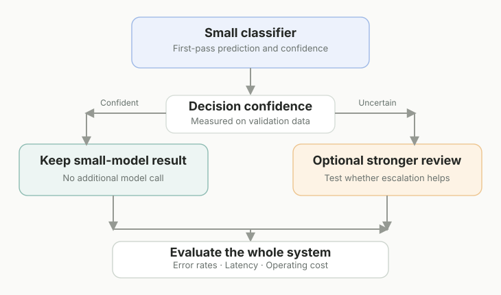

It’s tempting to reach for an LLM every time an application needs to interpret text. The models are flexible, the APIs are convenient, and the first prototype can be impressively quick to build.
But one of the more useful decisions I made while building an AI news intelligence pipeline was to keep a narrow classification task narrow.
Before the system clusters articles, extracts entities, or produces higher-level analysis, it has to answer a basic question:
Is this article actually about artificial intelligence?
That is a decision a general-purpose LLM could make. It does not follow that an LLM is the best default component for making it repeatedly.
Start with the shape of the problem
An incoming feed item usually gives us a title, description, and sometimes a category. The goal is a binary decision: relevant or not relevant.
The output is not a nuanced essay or a multi-step plan. It is a label that controls what the rest of the system does.
A conventional supervised classifier is a reasonable place to start when the categories are well defined and labeled examples are available. It can be evaluated on a held-out dataset, loaded locally, and called without making a remote generative-model request for every item.
That doesn’t automatically make it more accurate than an LLM. It makes it a different engineering tradeoff, one worth measuring instead of dismissing.
The classifier I actually use
For the binary relevance gate in Axon Review, the training pipeline combines TF-IDF features with an XGBoost classifier. The current gatekeeper training script caps the text representation at 5,000 features, trains on labeled article text, and saves the resulting pipeline as a joblib artifact.
The runtime is slightly more interesting than a single model call.
It first checks a small set of deterministic conditions. Certain clearly unrelated title/category patterns can be excluded. Recognized AI-related category or title terms can take a fast path. Otherwise, the article’s title and description go to the trained binary classifier.
The current prediction service treats a probability of at least 0.5 as AI-related. It also returns the model’s positive-class probability, which is retained in the broader classification workflow.
One nuance matters here: a positive-class probability isn’t automatically a calibrated measure of certainty. If confidence is going to drive review decisions, calibration and error analysis deserve attention.
A pipeline doesn’t have to use one kind of model
The next decision in my news pipeline is different: what kind of AI story is this?
That is where the architecture becomes more layered. Macro-topic classification uses sentence embeddings followed by a trained classifier. Some subtopic decisions use specialized models and separate vectorizers. There are also taxonomy-normalization rules to keep stored labels consistent with the categories exposed to readers.
So this isn’t a story about rejecting embeddings, transformers, or LLMs.
It’s about avoiding a false choice between “classical ML everywhere” and “LLMs everywhere.”
Different stages can have different requirements:
| Decision | Reasonable starting point |
|---|---|
| Obvious exclusion or trusted metadata | Deterministic rule |
| Narrow, labeled relevance decision | Supervised text classifier |
| Richer topical representation | Embeddings plus classifier |
| Ambiguous, context-heavy judgment | Stronger model or human review, when justified |
The last row is a design option, not a description of an LLM fallback in my current binary classifier.
Where smaller models struggle
Conventional models have limitations. Vocabulary changes. Product names appear overnight. A narrow classifier can misread indirect references or borderline stories. Rules that once looked clever can become brittle.
That is why evaluation matters more than the simplicity of the architecture diagram.
A useful review set should include hard negatives, borderline positives, newly emerging terminology, and documents from sources the model did not learn to recognize by accident.
For a relevance gate, I would pay particular attention to false negatives. An irrelevant article that slips through may consume downstream resources; a highly relevant article that gets rejected may never have another chance to enter the intelligence pipeline.
The correct balance depends on what the application values. There is no universal threshold that settles it.
When an LLM is worth adding

A reasonable next experiment is selective escalation: let the cheaper classifier handle straightforward cases and send difficult cases to a stronger decision process.
But that design needs its own evaluation. A middle band of classifier scores is not proof that all difficult errors live there. Some confidently wrong predictions will escape it, and the second model can introduce new mistakes.
I’d compare at least three approaches on the same labeled examples: a conventional classifier alone, an LLM-based classifier alone, and a hybrid that escalates only selected cases. Then measure quality, latency, and total operational cost—not just the number of API calls.
Otherwise, “hybrid” is just another architectural preference pretending to be an optimization.
The larger lesson
Building AI applications is partly an exercise in choosing where to spend intelligence.
Use simple rules when the rule is reliable. Use small supervised models when the task is narrow and measurable. Use richer representations when they add something the cheaper approach misses. Reserve expensive or complex decisions for cases where their value can actually be demonstrated.
The point isn’t that smaller models always win.
It’s that model size should be a consequence of the problem, not the starting assumption.